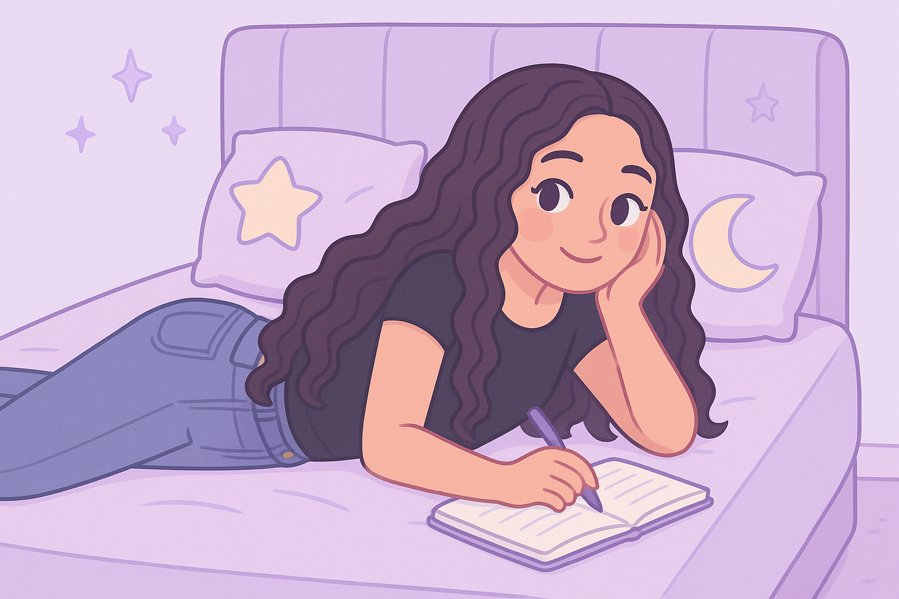

Olá, Leitor Curioso!
Quer saber mais sobre mim?

Me chamo Gabriele e sou estudante do curso tecnico de Informática para a Internet. Este é meu primeiro projeto de site, desenvolvido com HTML e CSS. Escolhi fazer um site sobre livros porque acho o tema interessante e visualmente bonito. Para esse projeto, quis criar um espaço com estilo suave usando tons de lilás. Espero futuramente aprimorar meus conhecimentos e criar designs cada vez mais criativos e funcionais.